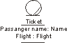
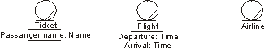
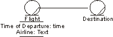

Artifacts >
Artifacts >
 Business Modeling Artifact Set >
Business Modeling Artifact Set >
 Business Object Model... >
Business Entity >
Business Object Model... >
Business Entity >
 Guidelines
Guidelines
Artifacts >
Business Modeling Artifact Set >
Business Object Model... >
Business Entity >
Guidelines
Guidelines:
|
Business Entity |
A business entity represents a "thing" handled or used by business workers. |
Business entities represent "things" handled or used by the business workers as they execute a business use case. A business entity often represents something of value to several business use cases or use-case instances, so the business entity object is rather long-lived. In general, it is good if the business entity holds no information about how and by whom it is used.
Typically, a business entity represents a document or an essential part of a product. Sometimes it represents something less tangible, like important knowledge about a market or a customer. Examples of business entities at the restaurant are Menu and Beverage; at the airport, Ticket and Boarding Pass are important business entities.
You need to model as business entities only those phenomena that other classes in the business object model must refer to. Other "things" may be modeled as attributes of the relevant classes, or just described textually in these classes.
An attribute of a class represents a piece of information about an
object of the class that is kept with the object. An attribute has an attribute
type.
Each attribute and attribute type, respectively, has a name.
An object normally holds different pieces of information that describe some of its characteristics. Such pieces of information can either be described implicitly in the textual description of the object’s class, or modeled explicitly as an attribute of the class.
An attribute is of a certain type. An attribute has a name, preferably a noun that describes the attribute’s role in relation to the class. An attribute type can be more or less primitive, starting from a simple number or string. Different classes can have attributes with identical structures. Those attributes should share a description; that is, they should share attribute type.
Note: You should only model attributes to make a class more understandable!
Now and then it is hard to know if you should describe a concept as an attribute of a class, or as a separate business entity class.
The general rule is: model a phenomenon as an attribute if no more than one object needs to have direct access to it, or if the only natural way to access it is through the object. Otherwise, you should model the concept separately, in a class of its own.

In the airport check-in use case, tickets are important. Each ticket has a passenger name and a flight. Here, the attributes Name and Flight are identified. The latter is more complex, consisting of airline, destination, time of departure, and time of arrival.

The flight is shared by all passengers traveling on the same flight. The airline is the same for several flights. A better alternative is therefore to model flight and airline as classes.
Once you have decided if a concept is so important to the use case that it must be modeled, what governs whether it should be modeled as a separate class, or merely as a class attribute, is not its importance in real life. Instead, what dictates how it is modeled, is the business need for accessing it. This means that some concepts will be modeled differently for different businesses.
Consider an example: to the employees working in a traffic-planning use case at an airport, flights are central. The time of departure, the airline and the destination must be defined for each flight. In this case, you might use a class, Flight, and give it the attributes time of departure, airline, and destination:
Flights are essential to employees working in a traffic-planning business use case at an airport.
On the other hand, the situation is different for the employees of a travel agency. They still need time of departure, airline and destination. Yet they have other needs, too. What is most important to a travel agency is finding a flight with a specific destination, in which case it is appropriate to create a separate class for Destination. The classes Flight and Destination must, of course, be aware of each other. This is enabled by a bi-directional association.

Flight departures and destinations are equally essential to employees working in a travel-agency use case.
Theoretically, everything can be modeled as a class. However, using attributes when appropriate reduces the number of classes that must be maintained and makes the object model easier to understand.
To perform its responsibilities, the person acting as a business worker uses one or several tools to manipulate the business entities. You can either define these tools generally, or explicitly, with the help of operations and messages representing the tools used and the accesses made. An operation defines the tool with which a business entity is manipulated. The access is initiated by a message. A tool that can be used to manipulate a business entity object is represented as an operation of the business entity class, with a name and, optionally, parameters. The access of a business entity unit is shown as a message being sent to the business entity object.
For example, an operation "associate baggage" on the business entity "ticket" would involve attaching baggage labels to the ticket. The parameters would include the baggage labels.
Each operation is defined by a name, which should tell its purpose, and, optionally, a number of parameters. The parameters specify what an object of the class should expect to receive from an object that is requesting support or making an access, and what the object will provide when the operation has been performed. As an example, you can give parameters that reflect when a business worker should take a step in the worker operation, or when he should access a certain business entity by initiating one of the business entity’s operations. Parameters can also represent more or less tangible things that are handed over.
Operations can be defined informally, or in more detail, depending on the importance or required level of detail in a use case. A "more detailed" description might describe a behavior sequence that tells which attributes and relationships are dealt with during its performance, how objects of other classes are contacted, and how it is terminated.
|
Rational Unified
Process
|